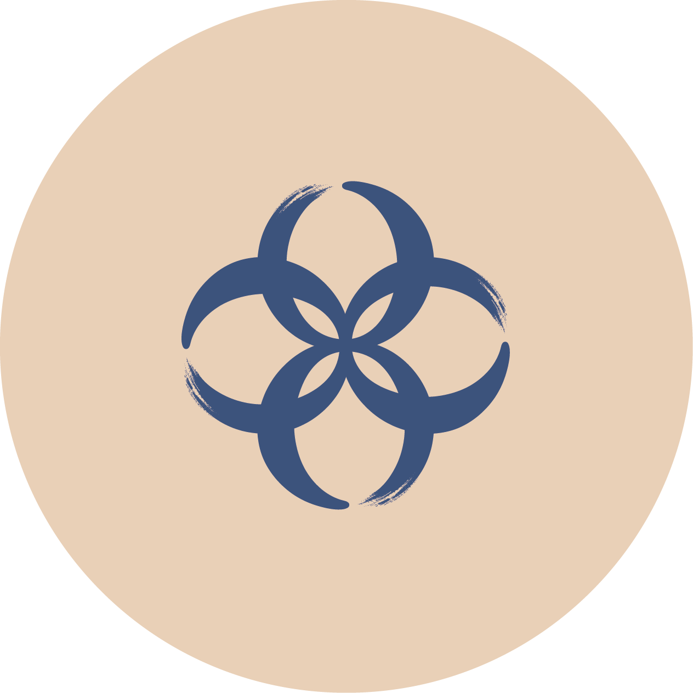
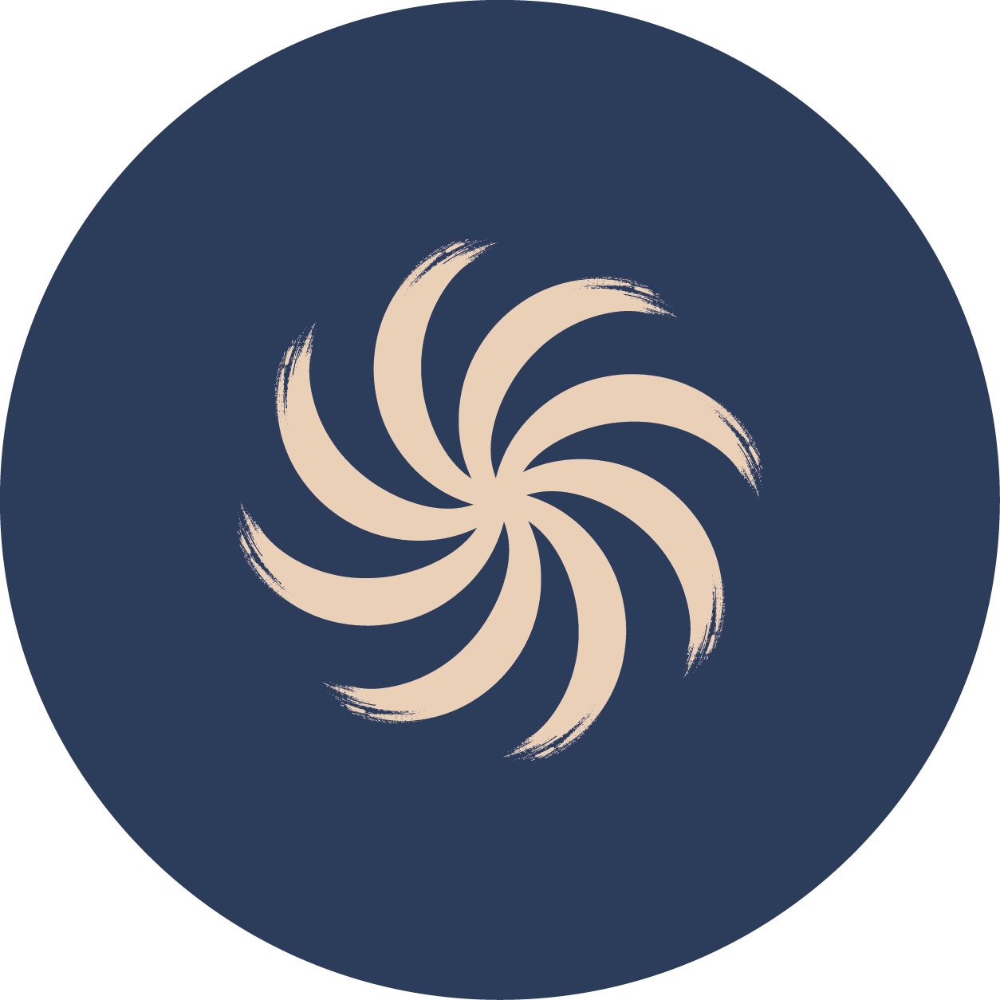
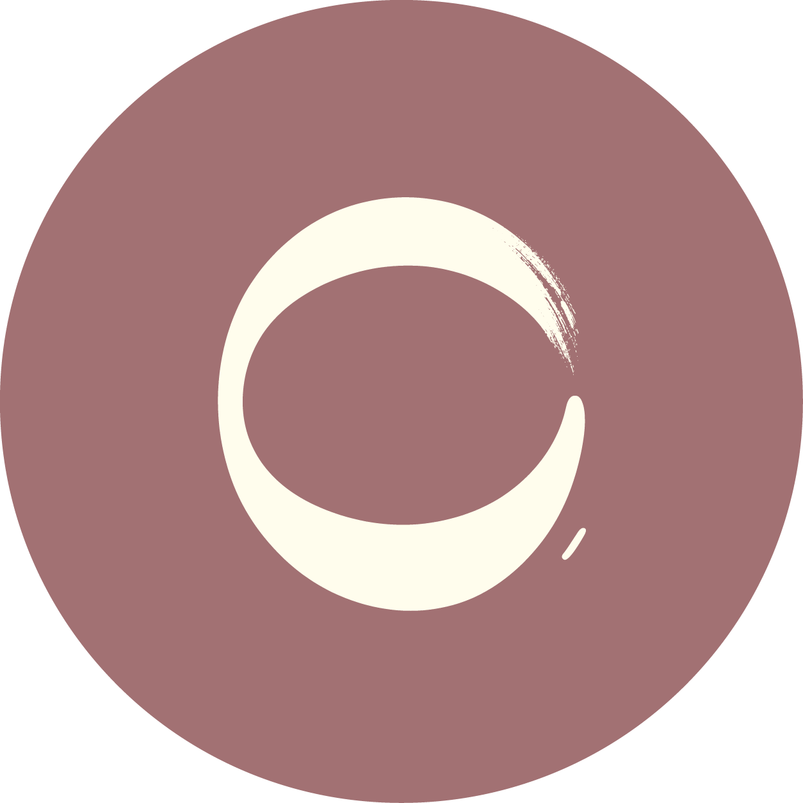
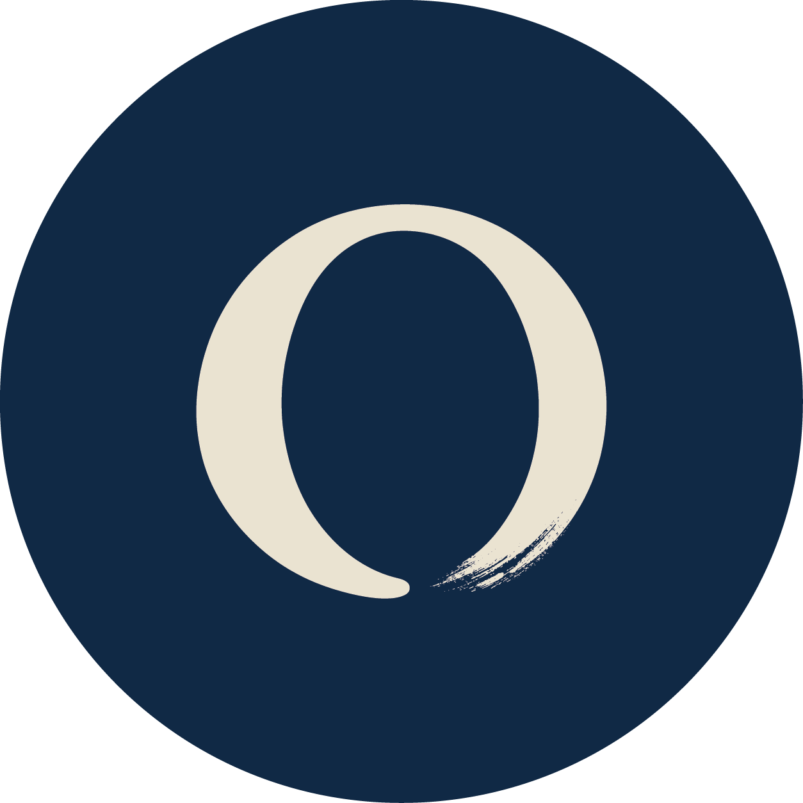

Como a Endo pode ajudar
Cada pessoa e cada organização vive desafios próprios.
Por isso, a Endo não parte de soluções prontas. Busca compreender o momento, o contexto e a necessidade para construir a forma de atuação mais adequada.

Mentoria & Coaching
Há momentos da trajetória profissional em que é importante criar espaço para refletir, ampliar perspectivas e fazer escolhas mais conscientes.
A Endo conduz processos individuais que combinam escuta, reflexão, repertório, ferramentas e acompanhamento para apoiar cada pessoa na compreensão de seu momento e na construção de movimentos concretos.
Pode apoiar
- • Transições e escolhas de carreira
- • Novos desafios profissionais
- • Desenvolvimento e posicionamento na liderança
- • Tomada de decisão
- • Construção de caminhos de desenvolvimento
Conversar sobre isso

Desenvolvimento de Lideranças
O desenvolvimento de líderes pode representar uma importante alavanca para o fortalecimento da capacidade organizacional e para a sustentação de seu crescimento.
A Endo desenvolve soluções que ampliam a compreensão dos líderes sobre seu papel, sobre as pessoas, as equipes e as dinâmicas organizacionais, articulando desenvolvimento individual, aprendizagem coletiva e fortalecimento das práticas de gestão.
Pode envolver
- • Programas e jornadas de desenvolvimento
- • Workshops
- • Assessment
- • Mentorias e processos individuais
- • Facilitação de grupos
Conversar sobre isso

Desenvolvimento Organizacional
À medida que uma organização cresce e se transforma, aumenta também a complexidade de sustentar seu desenvolvimento.
A Endo apoia organizações na compreensão desses desafios e na construção de condições para sustentar seu desenvolvimento de forma integrada, considerando identidade, relações, processos e recursos, e as conexões entre essas dimensões.
Pode envolver
- • Diagnósticos organizacionais
- • Desenvolvimento de equipes
- • Facilitação de processos
- • Jornadas e workshops
- • Intervenções desenhadas a partir do contexto
Conversar sobre isso

Assessoria Estratégica em Pessoas e Organização
Nem toda questão de pessoas e organização exige um projeto estruturado. Algumas pedem um espaço qualificado e continuado de reflexão, análise e tomada de decisão.
A Endo atua como parceira de executivos, lideranças e áreas de Pessoas, oferecendo experiência, repertório e um olhar externo para ampliar perspectivas, qualificar discussões e apoiar decisões relacionadas a pessoas, liderança e organização.
Pode envolver
- • Leitura e discussão de cenários
- • Decisões de pessoas e organização
- • Desafios de liderança e gestão
- • Estrutura e relações
- • Mudanças organizacionais
- • Apoio estratégico a RH e executivos
Conversar sobre isso

Clínica da Liderança
Psicoterapia para quem lidera. Antes de ocupar um papel de liderança, existe uma pessoa.
A Clínica da Liderança é um espaço de psicoterapia voltado a líderes, gestores e executivos. Considera a pessoa em sua integralidade e reconhece também as particularidades do contexto organizacional em que parte de suas experiências acontece.
Questões emocionais, conflitos, relações, decisões difíceis, transições, o peso das responsabilidades e as tensões vividas no exercício da liderança podem encontrar aqui um espaço de escuta, compreensão e elaboração, assim como questões que não tenham origem no trabalho.
Não é um processo orientado ao desenvolvimento de competências ou à performance. É psicoterapia para a pessoa que lidera.
Conversar sobre isso